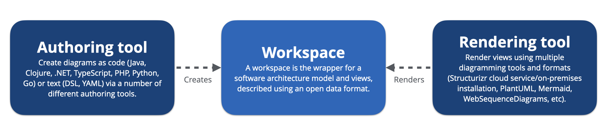
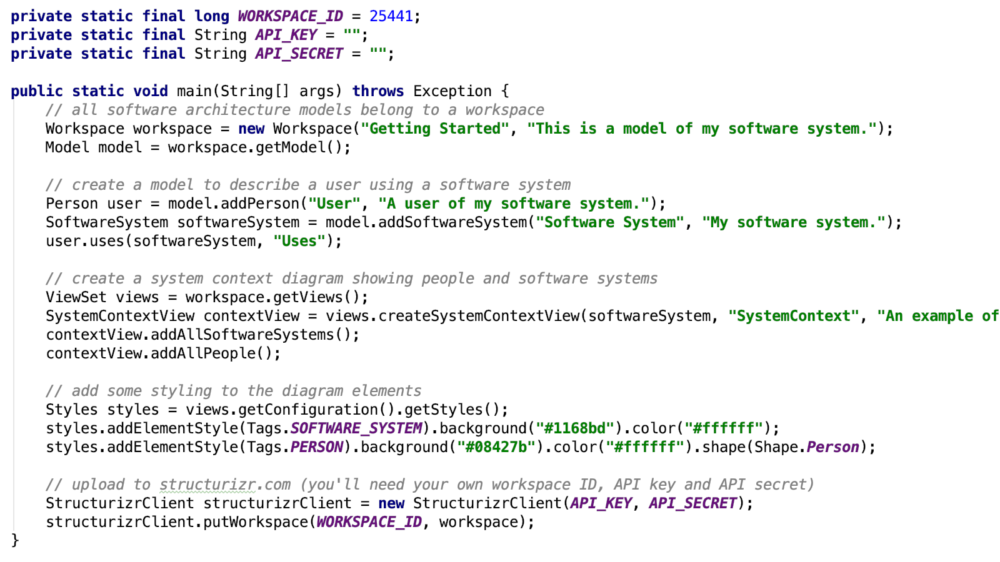

Looking for the Structurizr cloud service/on-premises installation?
Introduction
There has been a trend over the past few years towards text-based tooling, with the most popular examples including PlantUML, WebSequenceDiagrams and Mermaid. With these tools, the diagram source is provided as text using a special domain-specific language, which the tool then visualises, typically with an automatic layout algorithm. These tools generally have a low barrier to entry, and the source text is easily version controlled. Also, it's relatively straightforward to automate the use of these tools in order to generate diagrams and documentation during your build process.
However, each diagram needs to be defined separately, typically in a separate text file. If you have the same element on two diagrams, and you want to change the name of that element, you need to make sure that you change the name everywhere it's used. The global search and replace features in most developer tooling does make this less of a problem, but it's just one way that a collection of diagrams can easily become inconsistent if not managed properly. To solve this problem, we can create a single model, and visualise multiple views of it.
tl;dr
If you just want to create some software architecture diagrams:

What is Structurizr?
Structurizr is a collection of tooling to create software architecture diagrams and documentation based upon the C4 model. Structurizr was started in 2014 by Simon Brown (the creator of the C4 model), and has grown into a community of tooling, much of which is open source. In Structurizr terminology, a "workspace" is a wrapper for a software architecture model (elements and relationships) and views. Workspaces are described using an open data format (OpenAPI 3.0 definition), which decouples model authoring from diagram rendering.

Structurizr is "model-based", making it possible to generate multiple diagrams from the same model to ensure consistency, with details being in sync across all diagrams. And since the models are created using code/text, they are also versionable alongside your codebase in your source code repository.
Authoring tools
There are a number of tools for creating a workspace; including a text-based DSL and code-based client libraries.

Diagrams as text
The Structurizr DSL (as mentioned on the ThoughtWorks Tech Radar - Techniques - Diagrams as code) allows you to create multiple diagrams, in multiple output formats, from a single DSL source file. The DSL is designed to be used in conjunction with the Structurizr CLI. A number of VS Code extensions are also available, and the Structurizr cloud service and on-premises installation provide a web-based DSL editor, with diagramming previews and real-time collaboration. The Structurizr DSL is the recommended authoring option for most teams.
Alternatively, Arch as code is command line utility to create software architecture models as YAML.

Diagrams as code
Libraries are available for a number of programming languages, all compatible with the Structurizr JSON format for defining a workspace. This authoring option is recommended for teams who want to use code to help build their software architecture model (e.g. component discovery via static analysis, parsing distributed log files, etc). The following libraries are available, all of which are open source.
- Structurizr for Java
- Structurizr for Clojure
- Structurizr for .NET
- Structurizr for TypeScript
- Structurizr for PHP
- Structurizr for Python
- Model (Go; includes a diagram editor)
Rendering tools
Similarly, there are number of tools that can be used to render diagrams in a workspace, each offering a different set of features and integration options. All of the diagrams below are rendered from the same Structurizr DSL source file - see example.
The Structurizr cloud service and on-premises installation provide a web-based renderer, with diagrams that are
interactive, animatable, and embeddable.
It can also publish Markdown/AsciiDoc documentation and architecture decision records (ADRs).


A text-based diagramming tool - available via the Structurizr CLI.

WebSequenceDiagrams
A text-based diagramming tool - available via the Structurizr CLI (dynamic views only).


Other tools
Here are some other related tools.
A command line utility to automate the export of diagrams in PNG/SVG formats from the Structurizr cloud service/on-premises installation.
Macros to embed diagrams from the paid Structurizr cloud service/on-premises installation into Atlassian Confluence Server.
Macros to embed diagrams from the paid Structurizr cloud service/on-premises installation into Confluence on Atlassian Cloud.